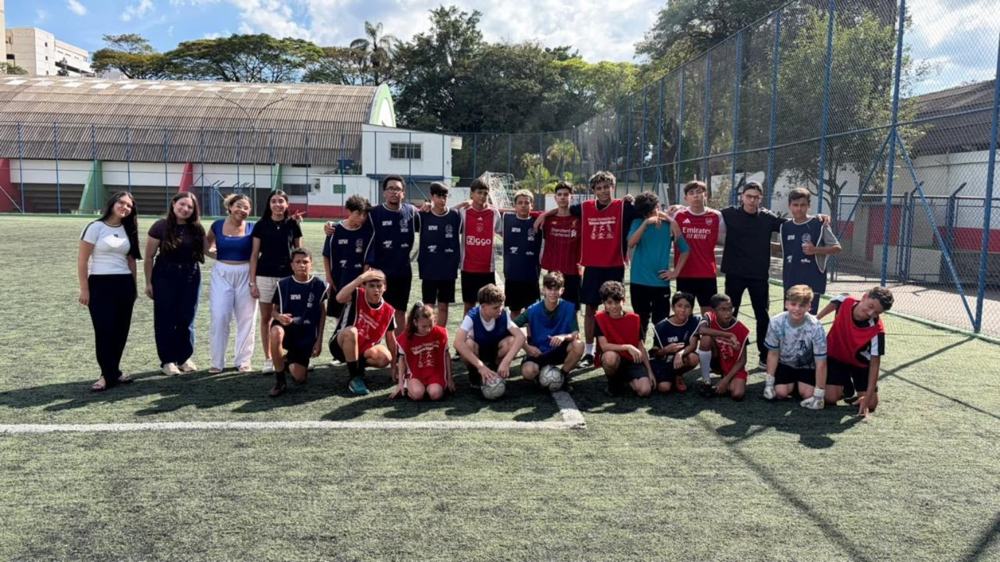

O que é o sono?
O sono é um estado natural e essencial de descanso para o corpo e para a mente. Durante o sono, o cérebro continua ativo para organizar memórias, libertar hormônios e reparar os tecidos do corpo.
UNIVERSIDADE MUNICIPAL DE SÃO CAETANO DO SUL
Impactos no Desempenho e na Saúde do Atleta
Conheça o projeto ↓O projeto
No cenário do esporte de alto rendimento, a busca incessante por melhorias no desempenho físico tem frequentemente negligenciado um dos pilares fundamentais para o sucesso atlético: a participação do sono no controle do movimento e a saúde mental. O treinamento desportivo tem focado exclusivamente no desenvolvimento de capacidades físicas, biomecânicas e nutricionais. Contudo, investigações científicas recentes evidenciam que o limite do desempenho humano não é ditado apenas pela musculatura, mas pela capacidade de processamento do sistema nervoso central.
O sono adequado contribui para a recuperação, a aprendizagem motora, a atenção e a tomada de decisões no esporte.
Onde acontece
O projeto será realizado em um espaço destinado à prática esportiva, como academia, centro de treinamento, clube ou instituição esportiva parceira, em local previamente definido pelos responsáveis pelo projeto. O ambiente deverá apresentar espaço adequado para a realização da apresentação e das atividades propostas, garantindo condições de segurança, organização e participação dos integrantes.
Informação e conscientização
Conteúdos apresentados no material educativo do projeto.
O sono é um estado natural e essencial de descanso para o corpo e para a mente. Durante o sono, o cérebro continua ativo para organizar memórias, libertar hormônios e reparar os tecidos do corpo.
Durante o sono profundo, o corpo libera hormônios que ajudam a reparar os músculos usados nos treinos.
É à noite que o corpo produz a maior parte do hormônio do crescimento (GH).
Noites bem dormidas melhoram a tomada de decisão, o tempo de reação e a concentração no esporte e na escola.
Um atleta cansado comete mais erros e corre maior risco de se machucar.
Atividade realizada
Fotografia enviada para documentar a participação da equipe e dos atletas.

Registros audiovisuais
Registro da atividade · Vídeo 1
Registro da atividade · Vídeo 2
Registro da atividade · Vídeo 3
Registro da atividade · Vídeo 4
Base científica
Referências transcritas do documento do projeto enviado.
CONESSA, Adrien et al. Sleep-related motor skill consolidation and generalizability after physical practice, motor imagery, and action observation. iScience, v. 26, n. 8, 107314, 2023. DOI: 10.1016/j.isci.2023.107314.
Consultar publicação ↗HALSON, Shona L.; JULIFF, Laura E. Sleep, sport, and the brain. Progress in Brain Research, v. 234, p. 13–31, 2017. DOI: 10.1016/bs.pbr.2017.06.006.
Consultar publicação ↗WALSH, Neil P. et al. Sleep and the athlete: narrative review and 2021 expert consensus recommendations. British Journal of Sports Medicine, bjsports-2020-102025, 2020. DOI: 10.1136/bjsports-2020-102025.
Consultar publicação ↗PATEL, Akash R. et al. Assessing the effects of sleep on neurocognitive performance and injury rate in adolescent athletes using actigraphy. Research in Sports Medicine, v. 28, n. 4, p. 498–506, 2020. DOI: 10.1080/15438627.2020.1716229. Acesso em: 9 set. 2026.
Consultar publicação ↗SUPPIAH, Haresh T.; LOW, Chee Yong; CHIA, Michael. Effects of sport-specific training intensity on sleep patterns and psychomotor performance in adolescent athletes. Pediatric Exercise Science, v. 28, n. 4, p. 588–595, 2016. DOI: 10.1123/pes.2015-0205. Acesso em: 9 set. 2026.
Consultar publicação ↗COEL, Rachel A. et al. Sleep and the young athlete. Sports Health, v. 15, n. 4, p. 537–546, 2023. DOI: 10.1177/19417381221108732. Acesso em: 9 set. 2026.
Consultar publicação ↗O projeto evidencia que o sono adequado e as funções cognitivas são pilares fundamentais, muitas vezes negligenciados, para o rendimento, a saúde mental e a prevenção de lesões em atletas. Por meio de ações educativas, palestras e dinâmicas sobre higiene do sono, a iniciativa busca aproximar o conhecimento da comunidade esportiva, capacitando os estudantes de Fisioterapia na promoção da saúde e conscientizando os jovens atletas sobre a importância de hábitos equilibrados.